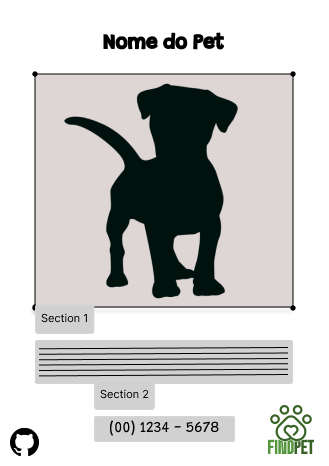

Baixe o Panfleto
Nesta seção do site, você poderá baixar um panfleto pré-pronto para imprimir e colocar nas ruas. Esse panfleto ajudará a divulgar a busca pelo seu pet perdido. Basta clicar no botão abaixo para fazer o download e imprimi-lo em casa. Quanto mais panfletos você distribuir, maiores são as chances de encontrar seu amigo!
Baixar Panfleto

Modelo de Panfleto
Veja um exemplo de como o panfleto pode parecer. Use-o para adicionar informações sobre o seu pet desaparecido.